Demographic data base (ancient Sweden) main effects
Loading details
library(data.table); library(ggplot2); library(knitr); library(lme4); library(blme)
opts_chunk$set(warning=TRUE, cache=TRUE,tidy=FALSE,autodep=TRUE,dev=c('png','pdf'),fig.width=20,fig.height=12.5,out.width='1440px',out.height='900px',cache.extra=file.info('ddb.rdata')[, 'mtime'])
source("0__helpers.R")
load("ddb.rdata")
Analysis description
Data subset
The ddb.1 dataset contains only those participants where paternal age is known, the birthdate is between 1760 and 1880 and the marriage is known (meaning we know when it started and how it ended by spousal death). In known marriages we can assume that missing death dates for the kids mean that they migrated out.
Model description
All of the following models have the following in common:
Multivariate normal prior
Using the R package blme which provides a thin Bayesian wrapper around lme4, we define a weak multivariate normal prior on the fixed effects. Especially in models where we have many covariates and the outcome has little variability (e.g. child mortality in modern Sweden), this helps us to combat complete separation and the Hauck-Donner effect. In the absence of these conditions, the extremely weak prior (SD = 9) leads to results that are identical or very similar to the standard lme4 models.
Multivariate normal prior
Using the R package blme which provides a thin Bayesian wrapper around lme4, we define a weak multivariate normal prior on the fixed effects. Especially in models where we have many covariates and the outcome has little variability (e.g. child mortality in modern Sweden), this helps us to combat complete separation and the Hauck-Donner effect. In the absence of these conditions, the extremely weak prior (SD = 9) leads to results that are identical or very similar to the standard lme4 models.
Optimizer settings
Bobyqa is fairly robust to convergence failures. In addition to using Bobyqa, we center some variables that otherwise lead to large eigenvalues.
control_defaults = glmerControl(optimizer = "bobyqa")
Main predictor
The main predictor, paternal age, has been binned into meaningful bins. This way, we let the data speak and can see whether the shape of the relationship is consistent with a linear effect. To this end we plot a linear regression through the best estimates for each factor (inversely weighted by confidence interval width, i.e. certainty). Even if a nonlinear fit might be slightly better, our theory clearly predicts a linear fit, so we are satisfied it the data is consistent with a linear effect.
formr::crosstabs(ddb$paternalage.factor)
## ddb$paternalage.factor
## [0,25] (25,30] (30,35] (35,40] (40,45] (45,50] (50,55] (55,90]
## 21176 60825 68117 53010 32477 15334 5774 3217
Covariates
We control for birth.cohort (birth years in five equally large bins), male sex.
Model stratification
We added random intercepts for each family (father-mother dyad). We then controlled for the average paternal age in the family. Hence, the paternal age effects in the plot are split into those between families and those within families or between siblings. The relevant effect for our hypothesized mechanism, de novo mutations, is paternal age between siblings.
Episodes of selection
Here, episodes of selection refers to survival, mating success, reproductive success. To steer clear of sacrificial pseudo-replication, we make sure that each effect cannot be explained by the episode of selection preceding it. At its simplest, we check for effect on survival to reproduction only among those who lived to their first birthday. In later models, we look for an effect on number of children only among those who married and control their number of spouses.
Survival to first year
Survive_infancy <- bglmer(
survive1y ~ birth.cohort + male + paternalage.mean + paternalage.factor + region + (1|idParents),
data= ddb.1, subset = !is.na(survive1y),
family = 'binomial', control = control_defaults,
fixef.prior = normal() )
summary(Survive_infancy)
## Cov prior : idParents ~ wishart(df = 3.5, scale = Inf, posterior.scale = cov, common.scale = TRUE)
## Fixef prior: normal(sd = c(10, 2.5, ...), corr = c(0 ...), common.scale = FALSE)
## Prior dev : 67
##
## Generalized linear mixed model fit by maximum likelihood (Laplace
## Approximation) [bglmerMod]
## Family: binomial ( logit )
## Formula:
## survive1y ~ birth.cohort + male + paternalage.mean + paternalage.factor +
## region + (1 | idParents)
## Data: ddb.1
## Control: control_defaults
## Subset: !is.na(survive1y)
##
## AIC BIC logLik deviance df.resid
## 134137 134319 -67051 134101 179357
##
## Scaled residuals:
## Min 1Q Median 3Q Max
## -4.570 0.235 0.281 0.346 1.667
##
## Random effects:
## Groups Name Variance Std.Dev.
## idParents (Intercept) 1.04 1.02
## Number of obs: 179375, groups: idParents, 49321
##
## Fixed effects:
## Estimate Std. Error z value Pr(>|z|)
## (Intercept) 2.734684 0.043999 62.2 < 2e-16 ***
## birth.cohort(1824,1845] 0.255383 0.027018 9.5 < 2e-16 ***
## birth.cohort(1845,1860] 0.459896 0.029069 15.8 < 2e-16 ***
## birth.cohort(1860,1872] 0.409872 0.028397 14.4 < 2e-16 ***
## birth.cohort(1872,1880] 0.425511 0.029813 14.3 < 2e-16 ***
## male -0.214723 0.015978 -13.4 < 2e-16 ***
## paternalage.mean 0.476202 0.022337 21.3 < 2e-16 ***
## paternalage.factor(25,30] -0.219049 0.034852 -6.3 3.3e-10 ***
## paternalage.factor(30,35] -0.361518 0.036187 -10.0 < 2e-16 ***
## paternalage.factor(35,40] -0.632829 0.038842 -16.3 < 2e-16 ***
## paternalage.factor(40,45] -0.871038 0.043378 -20.1 < 2e-16 ***
## paternalage.factor(45,50] -1.154020 0.051821 -22.3 < 2e-16 ***
## paternalage.factor(50,55] -1.412181 0.068995 -20.5 < 2e-16 ***
## paternalage.factor(55,90] -1.961870 0.090557 -21.7 < 2e-16 ***
## regionLinkopings -0.000761 0.029790 0.0 0.98
## regionNorra inlands -0.238632 0.032165 -7.4 1.2e-13 ***
## regionSundsvalls -0.267550 0.028143 -9.5 < 2e-16 ***
## ---
## Signif. codes: 0 '***' 0.001 '**' 0.01 '*' 0.05 '.' 0.1 ' ' 1
##
## Correlation of Fixed Effects:
## (Intr) b.(182 b.(184 b.(186 b.(187 male ptrnl. p.(25, p.(30,
## b.(1824,184 -0.320
## b.(1845,186 -0.325 0.509
## b.(1860,187 -0.323 0.497 0.544
## b.(1872,188 -0.295 0.475 0.488 0.560
## male -0.203 0.000 -0.002 -0.003 -0.001
## paternlg.mn 0.248 0.102 0.083 0.099 0.118 -0.003
## ptr.(25,30] -0.626 -0.026 -0.030 -0.033 -0.035 0.004 -0.191
## ptr.(30,35] -0.646 -0.046 -0.049 -0.058 -0.062 0.003 -0.334 0.773
## ptr.(35,40] -0.637 -0.058 -0.051 -0.075 -0.079 0.004 -0.434 0.743 0.798
## ptr.(40,45] -0.603 -0.063 -0.052 -0.082 -0.093 0.004 -0.504 0.688 0.753
## ptr.(45,50] -0.539 -0.065 -0.055 -0.082 -0.096 0.009 -0.547 0.599 0.672
## ptr.(50,55] -0.440 -0.059 -0.052 -0.065 -0.084 0.007 -0.549 0.475 0.548
## ptr.(55,90] -0.389 -0.051 -0.039 -0.053 -0.068 0.002 -0.621 0.400 0.483
## regnLnkpngs -0.481 0.143 0.163 0.181 0.178 0.000 0.063 -0.002 -0.008
## rgnNrrinlnd -0.431 0.121 0.117 0.127 0.109 0.002 0.002 0.004 0.000
## rgnSndsvlls -0.437 0.039 0.031 -0.008 -0.046 0.003 0.025 0.009 0.014
## p.(35, p.(40, p.(45, p.(50, p.(55, rgnLnk rgnNri
## b.(1824,184
## b.(1845,186
## b.(1860,187
## b.(1872,188
## male
## paternlg.mn
## ptr.(25,30]
## ptr.(30,35]
## ptr.(35,40]
## ptr.(40,45] 0.776
## ptr.(45,50] 0.704 0.707
## ptr.(50,55] 0.586 0.598 0.588
## ptr.(55,90] 0.530 0.551 0.550 0.523
## regnLnkpngs -0.013 -0.015 -0.022 -0.030 -0.044
## rgnNrrinlnd -0.002 -0.005 -0.011 -0.016 -0.024 0.571
## rgnSndsvlls 0.019 0.025 0.023 0.012 -0.001 0.618 0.572
Survive_infancy_coefs = fortify_mine(Survive_infancy)
plot_fortified_mer(Survive_infancy_coefs, "Surviving infancy / first year")
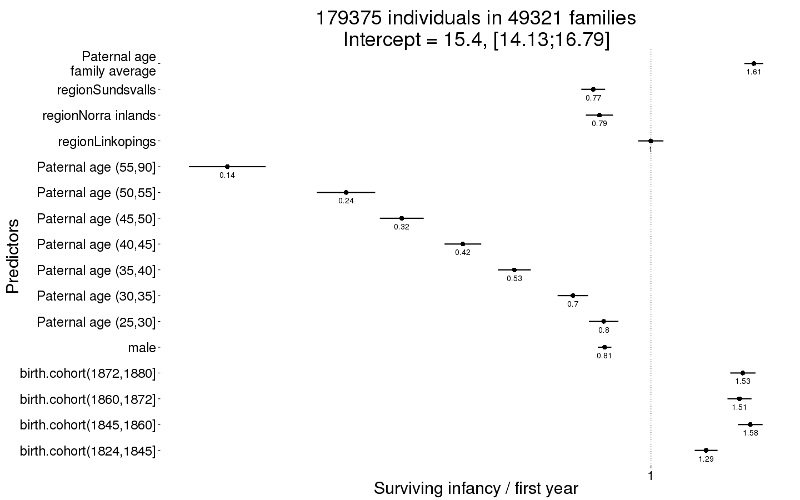
Survive_infancy_boot = plot_factor_response(Survive_infancy)
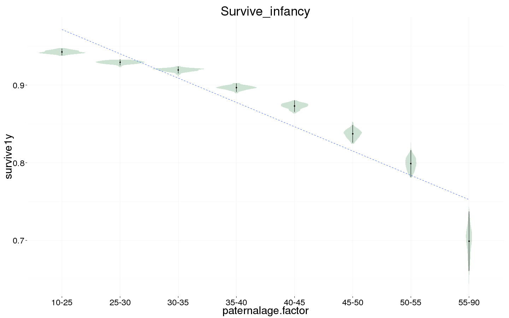
Survival to reproductive age
Survive_reproductive <- bglmer(
surviveR ~ birth.cohort + male + paternalage.mean + paternalage.factor + region + (1|idParents),
data= ddb.1,
family = 'binomial', control = control_defaults,
fixef.prior = normal() )
summary(Survive_reproductive)
## Cov prior : idParents ~ wishart(df = 3.5, scale = Inf, posterior.scale = cov, common.scale = TRUE)
## Fixef prior: normal(sd = c(10, 2.5, ...), corr = c(0 ...), common.scale = FALSE)
## Prior dev : 67
##
## Generalized linear mixed model fit by maximum likelihood (Laplace
## Approximation) [bglmerMod]
## Family: binomial ( logit )
## Formula:
## surviveR ~ birth.cohort + male + paternalage.mean + paternalage.factor +
## region + (1 | idParents)
## Data: ddb.1
## Control: control_defaults
##
## AIC BIC logLik deviance df.resid
## 163458 163635 -81711 163422 139405
##
## Scaled residuals:
## Min 1Q Median 3Q Max
## -3.224 -0.998 0.480 0.601 1.933
##
## Random effects:
## Groups Name Variance Std.Dev.
## idParents (Intercept) 0.647 0.804
## Number of obs: 139423, groups: idParents, 38964
##
## Fixed effects:
## Estimate Std. Error z value Pr(>|z|)
## (Intercept) 1.7386 0.0347 50.2 < 2e-16 ***
## birth.cohort(1824,1845] 0.2655 0.0222 12.0 < 2e-16 ***
## birth.cohort(1845,1860] 0.1850 0.0232 8.0 1.6e-15 ***
## birth.cohort(1860,1872] -0.0749 0.0229 -3.3 0.0011 **
## birth.cohort(1872,1880] -0.2584 0.0245 -10.6 < 2e-16 ***
## male -0.1959 0.0128 -15.3 < 2e-16 ***
## paternalage.mean 0.5365 0.0179 30.0 < 2e-16 ***
## paternalage.factor(25,30] -0.1868 0.0280 -6.7 2.6e-11 ***
## paternalage.factor(30,35] -0.3252 0.0288 -11.3 < 2e-16 ***
## paternalage.factor(35,40] -0.5047 0.0309 -16.3 < 2e-16 ***
## paternalage.factor(40,45] -0.6706 0.0345 -19.4 < 2e-16 ***
## paternalage.factor(45,50] -0.9112 0.0414 -22.0 < 2e-16 ***
## paternalage.factor(50,55] -1.1716 0.0555 -21.1 < 2e-16 ***
## paternalage.factor(55,90] -1.7355 0.0738 -23.5 < 2e-16 ***
## regionLinkopings -0.5982 0.0234 -25.6 < 2e-16 ***
## regionNorra inlands -0.2179 0.0246 -8.9 < 2e-16 ***
## regionSundsvalls -0.3554 0.0218 -16.3 < 2e-16 ***
## ---
## Signif. codes: 0 '***' 0.001 '**' 0.01 '*' 0.05 '.' 0.1 ' ' 1
##
## Correlation of Fixed Effects:
## (Intr) b.(182 b.(184 b.(186 b.(187 male ptrnl. p.(25, p.(30,
## b.(1824,184 -0.342
## b.(1845,186 -0.362 0.533
## b.(1860,187 -0.355 0.516 0.578
## b.(1872,188 -0.333 0.485 0.512 0.579
## male -0.200 -0.002 -0.001 0.002 0.003
## paternlg.mn 0.225 0.093 0.075 0.089 0.098 -0.003
## ptr.(25,30] -0.632 -0.024 -0.028 -0.031 -0.033 0.003 -0.178
## ptr.(30,35] -0.649 -0.041 -0.044 -0.056 -0.059 0.001 -0.312 0.777
## ptr.(35,40] -0.633 -0.051 -0.046 -0.073 -0.075 0.001 -0.408 0.746 0.798
## ptr.(40,45] -0.596 -0.055 -0.045 -0.080 -0.089 0.001 -0.478 0.688 0.750
## ptr.(45,50] -0.527 -0.055 -0.048 -0.077 -0.089 0.007 -0.523 0.595 0.664
## ptr.(50,55] -0.426 -0.052 -0.046 -0.062 -0.077 0.005 -0.531 0.468 0.537
## ptr.(55,90] -0.371 -0.045 -0.034 -0.048 -0.060 0.003 -0.606 0.388 0.466
## regnLnkpngs -0.449 0.135 0.175 0.196 0.208 0.005 0.051 -0.007 -0.016
## rgnNrrinlnd -0.407 0.115 0.119 0.124 0.113 0.002 -0.002 0.003 -0.002
## rgnSndsvlls -0.401 0.036 0.038 -0.001 -0.007 0.005 0.027 0.007 0.008
## p.(35, p.(40, p.(45, p.(50, p.(55, rgnLnk rgnNri
## b.(1824,184
## b.(1845,186
## b.(1860,187
## b.(1872,188
## male
## paternlg.mn
## ptr.(25,30]
## ptr.(30,35]
## ptr.(35,40]
## ptr.(40,45] 0.768
## ptr.(45,50] 0.691 0.691
## ptr.(50,55] 0.570 0.581 0.569
## ptr.(55,90] 0.509 0.529 0.527 0.501
## regnLnkpngs -0.023 -0.027 -0.032 -0.037 -0.048
## rgnNrrinlnd -0.004 -0.007 -0.012 -0.015 -0.023 0.536
## rgnSndsvlls 0.010 0.014 0.012 0.004 -0.007 0.568 0.540
Survive_reproductive_coefs = fortify_mine(Survive_reproductive)
plot_fortified_mer(Survive_reproductive_coefs, "Surviving to reproductive age / 15 years")

Survive_reproductive_boot = plot_factor_response(Survive_reproductive)
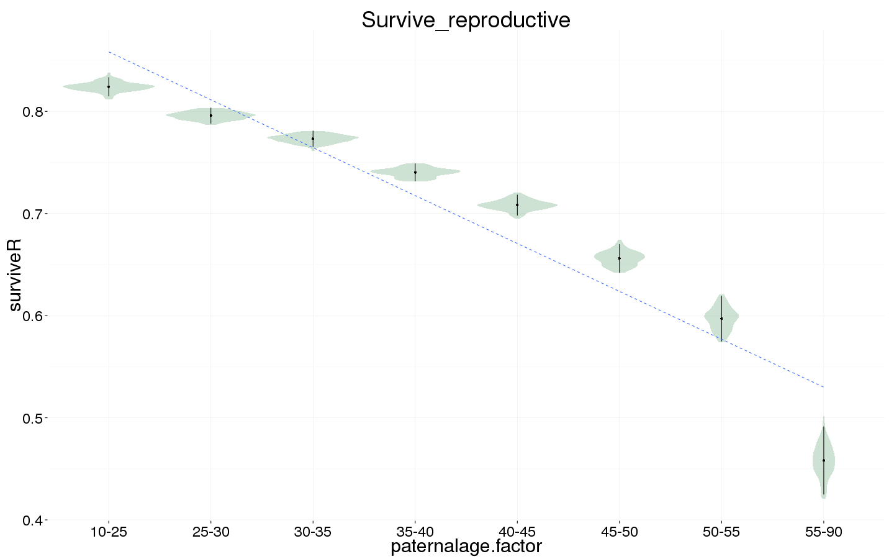
Ever married
Ever_married <- bglmer(
ever_married ~ birth.cohort + male + paternalage.mean + paternalage.factor + region + (1|idParents),
data= ddb.1, subset = surviveR == T & byear < 1850,
family = 'binomial', control = control_defaults,
fixef.prior = normal() )
summary(Ever_married)
## Cov prior : idParents ~ wishart(df = 3.5, scale = Inf, posterior.scale = cov, common.scale = TRUE)
## Fixef prior: normal(sd = c(10, 2.5, ...), corr = c(0 ...), common.scale = FALSE)
## Prior dev : 59
##
## Generalized linear mixed model fit by maximum likelihood (Laplace
## Approximation) [bglmerMod]
## Family: binomial ( logit )
## Formula:
## ever_married ~ birth.cohort + male + paternalage.mean + paternalage.factor +
## region + (1 | idParents)
## Data: ddb.1
## Control: control_defaults
## Subset: surviveR == T & byear < 1850
##
## AIC BIC logLik deviance df.resid
## 60982 61122 -30475 60950 48691
##
## Scaled residuals:
## Min 1Q Median 3Q Max
## -2.486 -0.850 0.495 0.648 1.908
##
## Random effects:
## Groups Name Variance Std.Dev.
## idParents (Intercept) 0.738 0.859
## Number of obs: 48707, groups: idParents, 17347
##
## Fixed effects:
## Estimate Std. Error z value Pr(>|z|)
## (Intercept) 1.2929 0.0508 25.4 < 2e-16 ***
## birth.cohort(1824,1845] -0.0854 0.0255 -3.4 0.00081 ***
## birth.cohort(1845,1860] -0.2700 0.0385 -7.0 2.5e-12 ***
## male -0.2293 0.0210 -10.9 < 2e-16 ***
## paternalage.mean 0.1421 0.0284 5.0 5.8e-07 ***
## paternalage.factor(25,30] -0.0953 0.0437 -2.2 0.02917 *
## paternalage.factor(30,35] -0.1819 0.0452 -4.0 5.8e-05 ***
## paternalage.factor(35,40] -0.2436 0.0490 -5.0 6.6e-07 ***
## paternalage.factor(40,45] -0.3615 0.0554 -6.5 7.1e-11 ***
## paternalage.factor(45,50] -0.4891 0.0675 -7.2 4.5e-13 ***
## paternalage.factor(50,55] -0.5679 0.0912 -6.2 4.8e-10 ***
## paternalage.factor(55,90] -0.7678 0.1203 -6.4 1.7e-10 ***
## regionLinkopings -1.2248 0.0358 -34.2 < 2e-16 ***
## regionNorra inlands 0.0771 0.0386 2.0 0.04563 *
## regionSundsvalls -0.0400 0.0370 -1.1 0.27921
## ---
## Signif. codes: 0 '***' 0.001 '**' 0.01 '*' 0.05 '.' 0.1 ' ' 1
##
## Correlation of Fixed Effects:
## (Intr) b.(182 b.(184 male ptrnl. p.(25, p.(30, p.(35, p.(40,
## b.(1824,184 -0.297
## b.(1845,186 -0.220 0.432
## male -0.209 0.000 -0.002
## paternlg.mn 0.215 0.147 0.110 -0.004
## ptr.(25,30] -0.660 -0.039 -0.026 0.002 -0.181
## ptr.(30,35] -0.673 -0.064 -0.048 -0.003 -0.322 0.761
## ptr.(35,40] -0.652 -0.082 -0.059 0.002 -0.423 0.725 0.779
## ptr.(40,45] -0.607 -0.091 -0.073 -0.003 -0.498 0.663 0.729 0.748
## ptr.(45,50] -0.530 -0.094 -0.081 0.007 -0.543 0.568 0.640 0.670 0.673
## ptr.(50,55] -0.424 -0.085 -0.069 0.009 -0.546 0.445 0.518 0.554 0.567
## ptr.(55,90] -0.364 -0.084 -0.061 0.002 -0.626 0.375 0.459 0.506 0.529
## regnLnkpngs -0.471 0.192 0.176 0.009 0.067 -0.005 -0.018 -0.026 -0.028
## rgnNrrinlnd -0.428 0.165 0.123 -0.010 0.031 0.003 -0.011 -0.018 -0.019
## rgnSndsvlls -0.408 0.064 0.066 -0.010 0.071 -0.004 -0.013 -0.019 -0.017
## p.(45, p.(50, p.(55, rgnLnk rgnNri
## b.(1824,184
## b.(1845,186
## male
## paternlg.mn
## ptr.(25,30]
## ptr.(30,35]
## ptr.(35,40]
## ptr.(40,45]
## ptr.(45,50]
## ptr.(50,55] 0.555
## ptr.(55,90] 0.527 0.499
## regnLnkpngs -0.032 -0.040 -0.059
## rgnNrrinlnd -0.027 -0.028 -0.040 0.571
## rgnSndsvlls -0.019 -0.031 -0.044 0.574 0.529
Ever_married_coefs = fortify_mine(Ever_married)
plot_fortified_mer(Ever_married_coefs, "Odds of ever marrying")
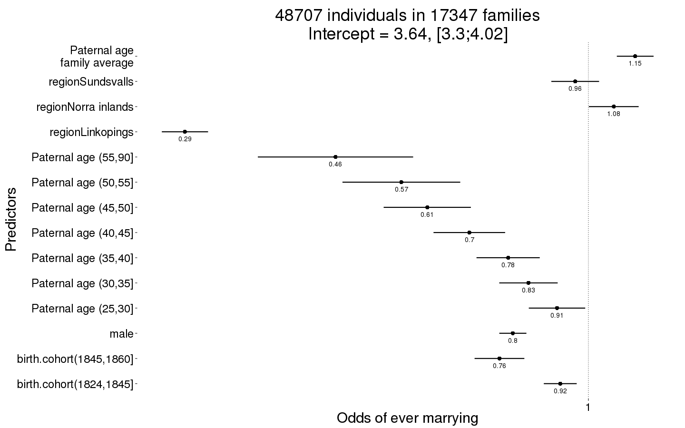
Ever_married_boot = plot_factor_response(Ever_married)
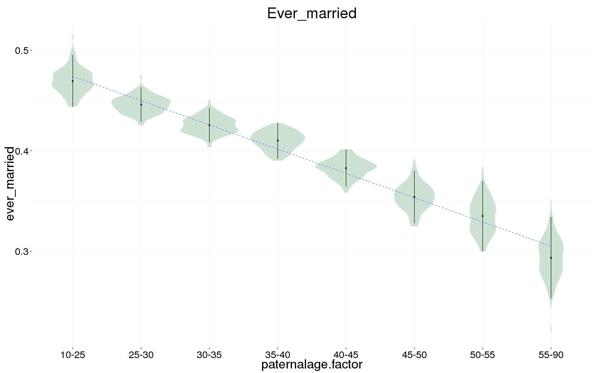
Number of children
Children <- bglmer(
children ~ center(spouses)*male + birth.cohort + paternalage.mean + paternalage.factor + region + (1|idParents) + (1|idIndividu),
data= ddb.1, subset = spouses > 0 & byear < 1850,
family = 'poisson', control = control_defaults,
fixef.prior = normal() )
summary(Children)
## Cov prior : idIndividu ~ wishart(df = 3.5, scale = Inf, posterior.scale = cov, common.scale = TRUE)
## : idParents ~ wishart(df = 3.5, scale = Inf, posterior.scale = cov, common.scale = TRUE)
## Fixef prior: normal(sd = c(10, 2.5, ...), corr = c(0 ...), common.scale = FALSE)
## Prior dev : 71
##
## Generalized linear mixed model fit by maximum likelihood (Laplace
## Approximation) [bglmerMod]
## Family: poisson ( log )
## Formula:
## children ~ center(spouses) * male + birth.cohort + paternalage.mean +
## paternalage.factor + region + (1 | idParents) + (1 | idIndividu)
## Data: ddb.1
## Control: control_defaults
## Subset: spouses > 0 & byear < 1850
##
## AIC BIC logLik deviance df.resid
## 150728 150886 -75345 150690 29946
##
## Scaled residuals:
## Min 1Q Median 3Q Max
## -1.746 -0.620 0.053 0.458 1.477
##
## Random effects:
## Groups Name Variance Std.Dev.
## idIndividu (Intercept) 0.2765 0.526
## idParents (Intercept) 0.0605 0.246
## Number of obs: 29965, groups: idIndividu, 29965; idParents, 13542
##
## Fixed effects:
## Estimate Std. Error z value Pr(>|z|)
## (Intercept) 1.14642 0.02515 45.6 <2e-16 ***
## center(spouses) 0.32296 0.01802 17.9 <2e-16 ***
## male 0.13924 0.02321 6.0 2e-09 ***
## birth.cohort(1824,1845] 0.00948 0.01038 0.9 0.3608
## birth.cohort(1845,1860] -0.04881 0.01631 -3.0 0.0028 **
## paternalage.mean 0.01846 0.01174 1.6 0.1157
## paternalage.factor(25,30] -0.00406 0.01814 -0.2 0.8230
## paternalage.factor(30,35] 0.00486 0.01881 0.3 0.7960
## paternalage.factor(35,40] -0.00366 0.02042 -0.2 0.8576
## paternalage.factor(40,45] -0.01294 0.02323 -0.6 0.5776
## paternalage.factor(45,50] -0.05320 0.02847 -1.9 0.0617 .
## paternalage.factor(50,55] -0.04686 0.03881 -1.2 0.2272
## paternalage.factor(55,90] -0.07056 0.05282 -1.3 0.1816
## regionLinkopings -0.47167 0.01525 -30.9 <2e-16 ***
## regionNorra inlands 0.00949 0.01361 0.7 0.4854
## regionSundsvalls -0.31479 0.01373 -22.9 <2e-16 ***
## center(spouses):male 0.01603 0.02585 0.6 0.5353
## ---
## Signif. codes: 0 '***' 0.001 '**' 0.01 '*' 0.05 '.' 0.1 ' ' 1
##
## Correlation of Fixed Effects:
## (Intr) cntr() male b.(182 b.(184 ptrnl. p.(25, p.(30, p.(35,
## centr(spss) -0.597
## male -0.449 0.650
## b.(1824,184 -0.248 0.003 -0.010
## b.(1845,186 -0.168 -0.002 -0.008 0.402
## paternlg.mn 0.193 -0.003 0.002 0.142 0.092
## ptr.(25,30] -0.556 0.005 0.006 -0.038 -0.019 -0.190
## ptr.(30,35] -0.566 0.003 -0.003 -0.062 -0.033 -0.337 0.755
## ptr.(35,40] -0.551 0.006 0.000 -0.080 -0.043 -0.440 0.720 0.773
## ptr.(40,45] -0.514 0.012 0.004 -0.085 -0.051 -0.511 0.656 0.722 0.739
## ptr.(45,50] -0.442 0.006 0.001 -0.086 -0.061 -0.543 0.559 0.631 0.659
## ptr.(50,55] -0.352 0.003 0.005 -0.076 -0.051 -0.543 0.436 0.509 0.545
## ptr.(55,90] -0.298 0.005 -0.005 -0.075 -0.043 -0.608 0.359 0.443 0.489
## regnLnkpngs -0.299 -0.002 -0.006 0.205 0.159 0.066 0.000 -0.012 -0.019
## rgnNrrinlnd -0.313 -0.019 -0.002 0.189 0.121 0.027 0.009 -0.004 -0.011
## rgnSndsvlls -0.263 -0.035 -0.035 0.069 0.047 0.078 -0.006 -0.014 -0.019
## cntr(spss): 0.411 -0.698 -0.925 0.012 0.008 -0.004 -0.004 0.001 0.001
## p.(40, p.(45, p.(50, p.(55, rgnLnk rgnNri rgnSnd
## centr(spss)
## male
## b.(1824,184
## b.(1845,186
## paternlg.mn
## ptr.(25,30]
## ptr.(30,35]
## ptr.(35,40]
## ptr.(40,45]
## ptr.(45,50] 0.654
## ptr.(50,55] 0.552 0.529
## ptr.(55,90] 0.507 0.496 0.463
## regnLnkpngs -0.022 -0.028 -0.032 -0.058
## rgnNrrinlnd -0.014 -0.019 -0.024 -0.034 0.491
## rgnSndsvlls -0.018 -0.017 -0.035 -0.047 0.462 0.510
## cntr(spss): -0.004 -0.001 -0.003 0.005 0.008 -0.002 0.039
Children_coefs = fortify_mine(Children)
plot_fortified_mer(Children_coefs, "Nr. Children (of those who had at least one spouse)")
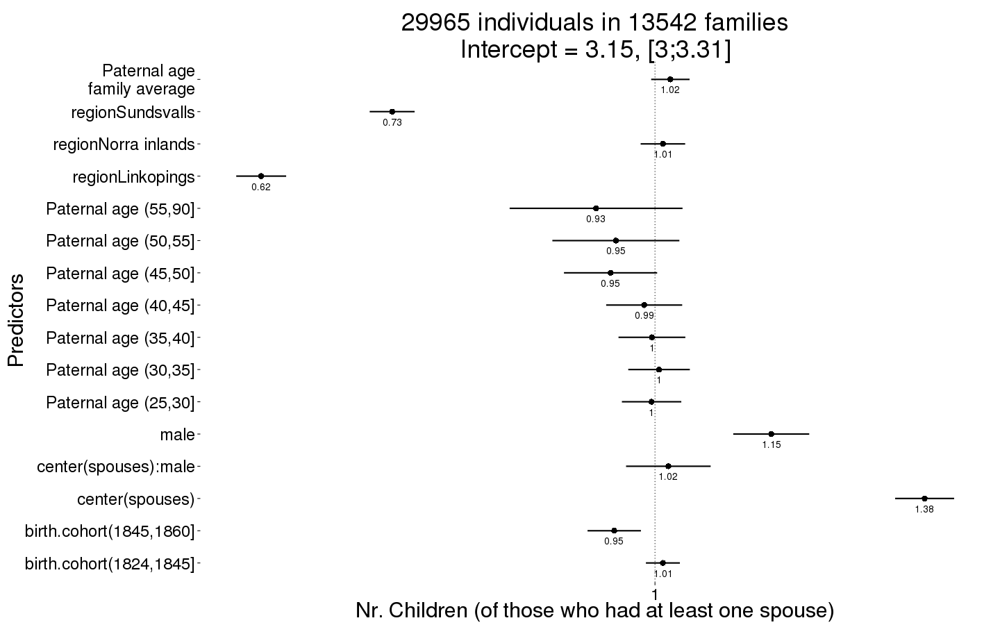
Children_boot = plot_factor_response(Children)
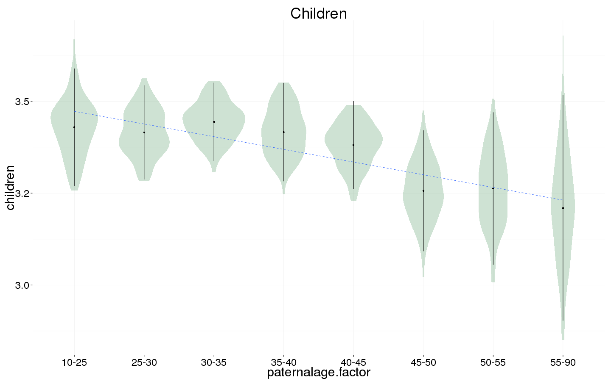
Number of children surviving first year
Children.surviving1y <- bglmer(
children.surviving1y ~ center(children) + birth.cohort + male +paternalage.mean + paternalage.factor + region + (1|idParents) + (1|idIndividu),
data= ddb.1, subset = children > 0 & byear < 1850,
family = 'poisson', control = control_defaults,
fixef.prior = normal() )
summary(Children.surviving1y)
## Cov prior : idIndividu ~ wishart(df = 3.5, scale = Inf, posterior.scale = cov, common.scale = TRUE)
## : idParents ~ wishart(df = 3.5, scale = Inf, posterior.scale = cov, common.scale = TRUE)
## Fixef prior: normal(sd = c(10, 2.5, ...), corr = c(0 ...), common.scale = FALSE)
## Prior dev : 87
##
## Generalized linear mixed model fit by maximum likelihood (Laplace
## Approximation) [bglmerMod]
## Family: poisson ( log )
## Formula: children.surviving1y ~ center(children) + birth.cohort + male +
## paternalage.mean + paternalage.factor + region + (1 | idParents) +
## (1 | idIndividu)
## Data: ddb.1
## Control: control_defaults
## Subset: children > 0 & byear < 1850
##
## AIC BIC logLik deviance df.resid
## 94834 94981 -47399 94798 26272
##
## Scaled residuals:
## Min 1Q Median 3Q Max
## -5.964 -0.517 0.046 0.512 1.266
##
## Random effects:
## Groups Name Variance Std.Dev.
## idIndividu (Intercept) 1.43e-05 0.00378
## idParents (Intercept) 2.40e-03 0.04894
## Number of obs: 26290, groups: idIndividu, 26290; idParents, 12597
##
## Fixed effects:
## Estimate Std. Error z value Pr(>|z|)
## (Intercept) 0.635063 0.014495 43.8 < 2e-16 ***
## center(children) 0.171982 0.000907 189.6 < 2e-16 ***
## birth.cohort(1824,1845] -0.028107 0.006670 -4.2 2.5e-05 ***
## birth.cohort(1845,1860] -0.092179 0.011118 -8.3 < 2e-16 ***
## male 0.031764 0.006057 5.2 1.6e-07 ***
## paternalage.mean 0.013681 0.007731 1.8 0.077 .
## paternalage.factor(25,30] 0.021958 0.012478 1.8 0.078 .
## paternalage.factor(30,35] 0.022614 0.012852 1.8 0.078 .
## paternalage.factor(35,40] 0.010180 0.013995 0.7 0.467
## paternalage.factor(40,45] -0.011353 0.015933 -0.7 0.476
## paternalage.factor(45,50] -0.030088 0.019582 -1.5 0.124
## paternalage.factor(50,55] -0.045235 0.026886 -1.7 0.092 .
## paternalage.factor(55,90] 0.026309 0.035036 0.8 0.453
## regionLinkopings -0.082828 0.009971 -8.3 < 2e-16 ***
## regionNorra inlands -0.073055 0.007893 -9.3 < 2e-16 ***
## regionSundsvalls -0.089036 0.008698 -10.2 < 2e-16 ***
## ---
## Signif. codes: 0 '***' 0.001 '**' 0.01 '*' 0.05 '.' 0.1 ' ' 1
##
## Correlation of Fixed Effects:
## (Intr) cntr() b.(182 b.(184 male ptrnl. p.(25, p.(30, p.(35,
## cntr(chldr) -0.387
## b.(1824,184 -0.269 -0.016
## b.(1845,186 -0.180 0.013 0.351
## male -0.195 -0.060 0.005 0.005
## paternlg.mn 0.256 -0.021 0.123 0.061 -0.001
## ptr.(25,30] -0.670 0.013 -0.028 -0.013 0.006 -0.189
## ptr.(30,35] -0.685 0.003 -0.048 -0.016 -0.001 -0.343 0.755
## ptr.(35,40] -0.667 0.015 -0.067 -0.020 0.001 -0.452 0.720 0.772
## ptr.(40,45] -0.622 0.010 -0.065 -0.020 0.002 -0.525 0.656 0.722 0.736
## ptr.(45,50] -0.539 0.016 -0.065 -0.033 -0.001 -0.553 0.557 0.631 0.656
## ptr.(50,55] -0.435 0.023 -0.058 -0.029 0.008 -0.546 0.433 0.508 0.542
## ptr.(55,90] -0.381 0.014 -0.061 -0.020 0.003 -0.630 0.371 0.462 0.511
## regnLnkpngs -0.326 0.139 0.190 0.134 -0.021 0.054 0.006 -0.003 -0.008
## rgnNrrinlnd -0.311 -0.060 0.198 0.107 -0.009 0.019 0.017 0.007 -0.003
## rgnSndsvlls -0.310 0.148 0.050 0.019 0.000 0.070 -0.004 -0.013 -0.018
## p.(40, p.(45, p.(50, p.(55, rgnLnk rgnNri
## cntr(chldr)
## b.(1824,184
## b.(1845,186
## male
## paternlg.mn
## ptr.(25,30]
## ptr.(30,35]
## ptr.(35,40]
## ptr.(40,45]
## ptr.(45,50] 0.648
## ptr.(50,55] 0.547 0.515
## ptr.(55,90] 0.529 0.511 0.464
## regnLnkpngs -0.008 -0.021 -0.022 -0.047
## rgnNrrinlnd -0.003 -0.011 -0.013 -0.029 0.423
## rgnSndsvlls -0.015 -0.010 -0.027 -0.046 0.387 0.447
Children.surviving1y_coefs = fortify_mine(Children.surviving1y)
plot_fortified_mer(Children.surviving1y_coefs, "Nr. Children who survive first year (of those who survived infancy)")
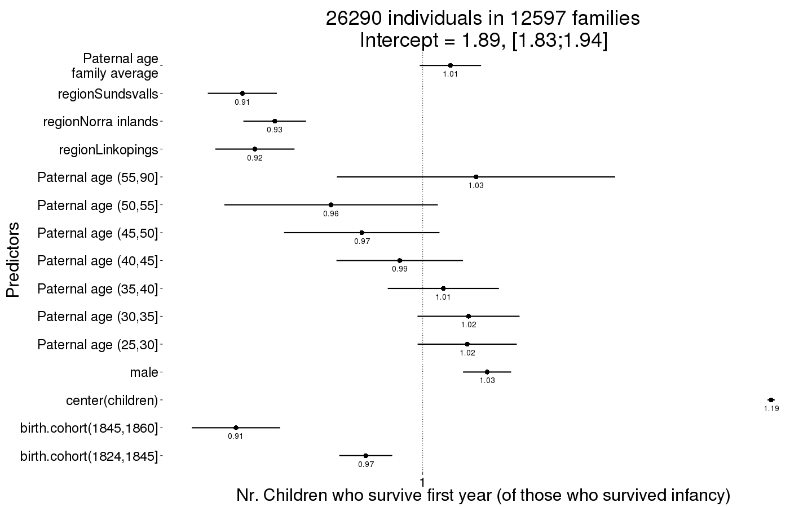
Children.surviving1y_boot = plot_factor_response(Children.surviving1y)
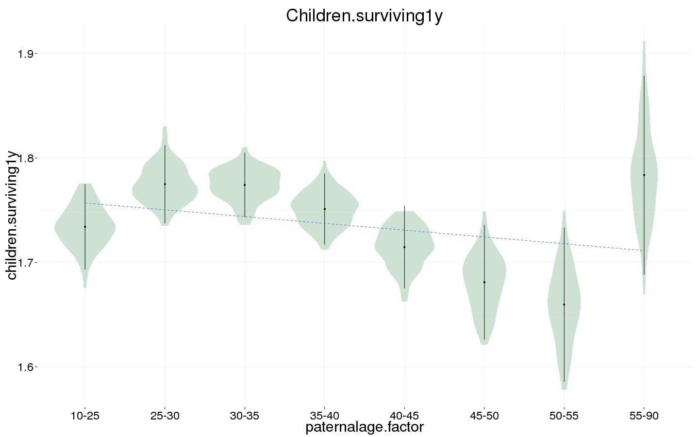
Number of grandchildren
Grandchildren.per.Child <- bglmer(
grandchildren ~ center(children) + male +paternalage.mean + paternalage.factor + region + (1|idParents) + (1|idIndividu),
data= ddb.1, subset = children > 0 & byear < 1800,
family = 'poisson', control = control_defaults,
fixef.prior = normal() )
summary(Grandchildren.per.Child)
## Cov prior : idIndividu ~ wishart(df = 3.5, scale = Inf, posterior.scale = cov, common.scale = TRUE)
## : idParents ~ wishart(df = 3.5, scale = Inf, posterior.scale = cov, common.scale = TRUE)
## Fixef prior: normal(sd = c(10, 2.5, ...), corr = c(0 ...), common.scale = FALSE)
## Prior dev : 48
##
## Generalized linear mixed model fit by maximum likelihood (Laplace
## Approximation) [bglmerMod]
## Family: poisson ( log )
## Formula: grandchildren ~ center(children) + male + paternalage.mean +
## paternalage.factor + region + (1 | idParents) + (1 | idIndividu)
## Data: ddb.1
## Control: control_defaults
## Subset: children > 0 & byear < 1800
##
## AIC BIC logLik deviance df.resid
## 15190 15272 -7581 15162 2508
##
## Scaled residuals:
## Min 1Q Median 3Q Max
## -1.512 -0.578 -0.001 0.151 0.733
##
## Random effects:
## Groups Name Variance Std.Dev.
## idIndividu (Intercept) 1.515 1.231
## idParents (Intercept) 0.466 0.683
## Number of obs: 2522, groups: idIndividu, 2522; idParents, 1479
##
## Fixed effects:
## Estimate Std. Error z value Pr(>|z|)
## (Intercept) -1.13560 0.14158 -8.02 1.1e-15 ***
## center(children) 0.29093 0.01031 28.21 < 2e-16 ***
## male 0.02773 0.06224 0.45 0.66
## paternalage.mean 0.01534 0.07776 0.20 0.84
## paternalage.factor(25,30] 0.06413 0.13130 0.49 0.63
## paternalage.factor(30,35] 0.11521 0.13507 0.85 0.39
## paternalage.factor(35,40] 0.17758 0.14837 1.20 0.23
## paternalage.factor(40,45] 0.18718 0.16495 1.13 0.26
## paternalage.factor(45,50] -0.00171 0.20053 -0.01 0.99
## paternalage.factor(50,55] 0.07512 0.25843 0.29 0.77
## paternalage.factor(55,90] -0.15263 0.31320 -0.49 0.63
## regionNorra inlands 1.40720 0.07686 18.31 < 2e-16 ***
## ---
## Signif. codes: 0 '***' 0.001 '**' 0.01 '*' 0.05 '.' 0.1 ' ' 1
##
## Correlation of Fixed Effects:
## (Intr) cntr() male ptrnl. p.(25, p.(30, p.(35, p.(40, p.(45,
## cntr(chldr) -0.294
## male -0.228 -0.032
## paternlg.mn 0.311 -0.029 -0.054
## ptr.(25,30] -0.709 0.013 0.013 -0.182
## ptr.(30,35] -0.753 0.015 0.016 -0.347 0.737
## ptr.(35,40] -0.744 0.037 0.016 -0.471 0.695 0.777
## ptr.(40,45] -0.712 0.049 0.035 -0.535 0.646 0.736 0.764
## ptr.(45,50] -0.626 0.004 0.043 -0.590 0.558 0.654 0.695 0.697
## ptr.(50,55] -0.534 0.021 0.030 -0.608 0.460 0.559 0.609 0.622 0.617
## ptr.(55,90] -0.523 0.043 0.052 -0.720 0.420 0.537 0.603 0.627 0.627
## rgnNrrinlnd -0.356 -0.119 -0.012 0.013 0.034 0.026 0.032 0.025 0.029
## p.(50, p.(55,
## cntr(chldr)
## male
## paternlg.mn
## ptr.(25,30]
## ptr.(30,35]
## ptr.(35,40]
## ptr.(40,45]
## ptr.(45,50]
## ptr.(50,55]
## ptr.(55,90] 0.614
## rgnNrrinlnd 0.016 0.019
Grandchildren.per.Child_coefs = fortify_mine(Grandchildren.per.Child)
plot_fortified_mer(Grandchildren.per.Child_coefs, "Nr. of grandchildren per child")
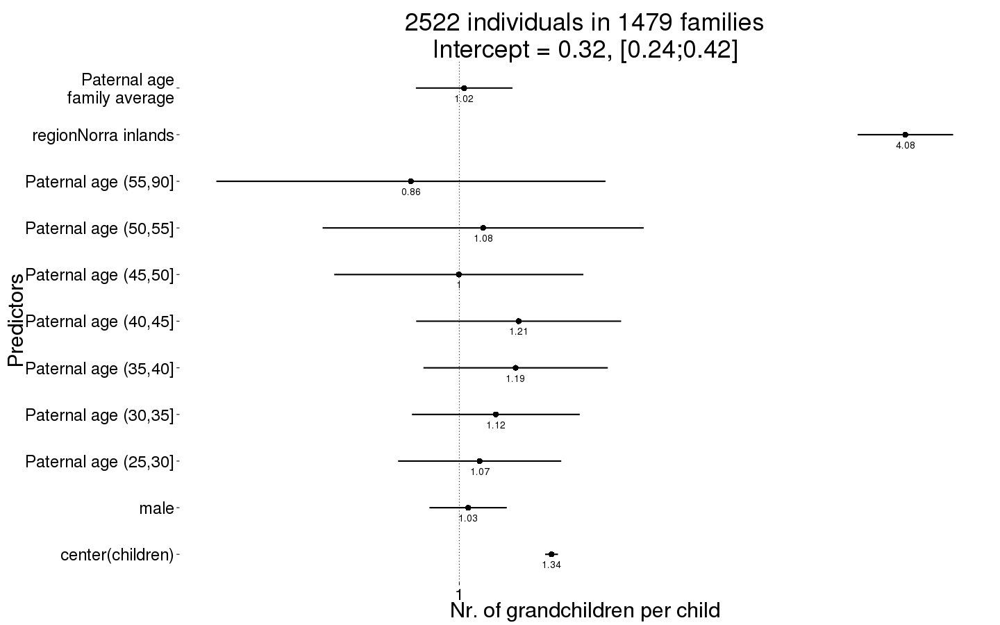
Grandchildren.per.Child_boot = plot_factor_response(Grandchildren.per.Child)
## Warning in bootMer(fit, mypred, nsim = 100, verbose = T, parallel =
## "multicore", : some bootstrap runs failed (100/100)
## Error in eval(expr, envir, enclos): object 'value' not found
Any surviving children
Any_surviving_children <- bglmer(
any_surviving_children ~ birth.cohort + male + paternalage.mean + paternalage.factor + region + (1|idParents),
data= ddb.1,
subset = byear < 1850,
family = 'binomial', control = control_defaults,
fixef.prior = normal() )
summary(Any_surviving_children)
## Cov prior : idParents ~ wishart(df = 3.5, scale = Inf, posterior.scale = cov, common.scale = TRUE)
## Fixef prior: normal(sd = c(10, 2.5, ...), corr = c(0 ...), common.scale = FALSE)
## Prior dev : 59
##
## Generalized linear mixed model fit by maximum likelihood (Laplace
## Approximation) [bglmerMod]
## Family: binomial ( logit )
## Formula:
## any_surviving_children ~ birth.cohort + male + paternalage.mean +
## paternalage.factor + region + (1 | idParents)
## Data: ddb.1
## Control: control_defaults
## Subset: byear < 1850
##
## AIC BIC logLik deviance df.resid
## 84711 84861 -42340 84679 84561
##
## Scaled residuals:
## Min 1Q Median 3Q Max
## -2.061 -0.518 -0.289 -0.182 4.691
##
## Random effects:
## Groups Name Variance Std.Dev.
## idParents (Intercept) 0.989 0.994
## Number of obs: 84577, groups: idParents, 24595
##
## Fixed effects:
## Estimate Std. Error z value Pr(>|z|)
## (Intercept) -0.3393 0.0457 -7.4 1.1e-13 ***
## birth.cohort(1824,1845] -0.0764 0.0235 -3.3 0.0011 **
## birth.cohort(1845,1860] -0.4631 0.0378 -12.3 < 2e-16 ***
## male -0.0354 0.0186 -1.9 0.0571 .
## paternalage.mean 0.4533 0.0260 17.4 < 2e-16 ***
## paternalage.factor(25,30] -0.0989 0.0384 -2.6 0.0101 *
## paternalage.factor(30,35] -0.2014 0.0401 -5.0 5.2e-07 ***
## paternalage.factor(35,40] -0.3213 0.0437 -7.4 1.9e-13 ***
## paternalage.factor(40,45] -0.5410 0.0497 -10.9 < 2e-16 ***
## paternalage.factor(45,50] -0.7066 0.0610 -11.6 < 2e-16 ***
## paternalage.factor(50,55] -0.9205 0.0826 -11.1 < 2e-16 ***
## paternalage.factor(55,90] -1.5660 0.1140 -13.7 < 2e-16 ***
## regionLinkopings -1.9425 0.0366 -53.1 < 2e-16 ***
## regionNorra inlands -0.0893 0.0354 -2.5 0.0116 *
## regionSundsvalls -0.3764 0.0341 -11.0 < 2e-16 ***
## ---
## Signif. codes: 0 '***' 0.001 '**' 0.01 '*' 0.05 '.' 0.1 ' ' 1
##
## Correlation of Fixed Effects:
## (Intr) b.(182 b.(184 male ptrnl. p.(25, p.(30, p.(35, p.(40,
## b.(1824,184 -0.294
## b.(1845,186 -0.204 0.424
## male -0.205 0.002 0.000
## paternlg.mn 0.209 0.167 0.119 0.001
## ptr.(25,30] -0.645 -0.040 -0.031 0.003 -0.188
## ptr.(30,35] -0.655 -0.077 -0.060 0.000 -0.332 0.760
## ptr.(35,40] -0.631 -0.098 -0.078 0.002 -0.433 0.721 0.781
## ptr.(40,45] -0.586 -0.109 -0.091 0.001 -0.501 0.656 0.727 0.749
## ptr.(45,50] -0.506 -0.115 -0.098 0.002 -0.539 0.559 0.635 0.667 0.670
## ptr.(50,55] -0.403 -0.106 -0.084 0.001 -0.540 0.437 0.513 0.549 0.561
## ptr.(55,90] -0.339 -0.092 -0.069 -0.003 -0.608 0.356 0.440 0.486 0.506
## regnLnkpngs -0.453 0.201 0.175 -0.004 0.078 -0.011 -0.028 -0.039 -0.037
## rgnNrrinlnd -0.460 0.182 0.131 -0.006 0.039 -0.001 -0.017 -0.027 -0.030
## rgnSndsvlls -0.442 0.067 0.066 -0.004 0.077 -0.003 -0.013 -0.018 -0.016
## p.(45, p.(50, p.(55, rgnLnk rgnNri
## b.(1824,184
## b.(1845,186
## male
## paternlg.mn
## ptr.(25,30]
## ptr.(30,35]
## ptr.(35,40]
## ptr.(40,45]
## ptr.(45,50]
## ptr.(50,55] 0.553
## ptr.(55,90] 0.505 0.487
## regnLnkpngs -0.044 -0.048 -0.056
## rgnNrrinlnd -0.037 -0.038 -0.049 0.550
## rgnSndsvlls -0.019 -0.030 -0.044 0.547 0.559
Any_surviving_children_coefs = fortify_mine(Any_surviving_children)
plot_fortified_mer(Any_surviving_children_coefs, "Any surviving children")
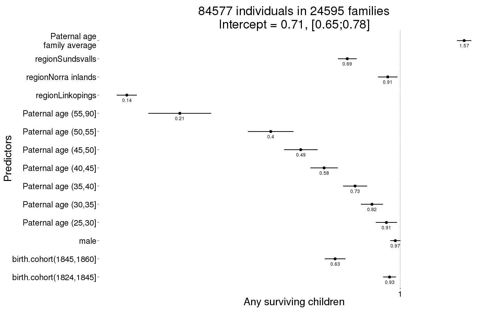
Any_surviving_children_boot = plot_factor_response(Any_surviving_children)
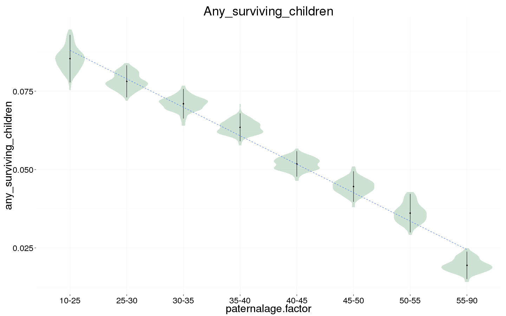